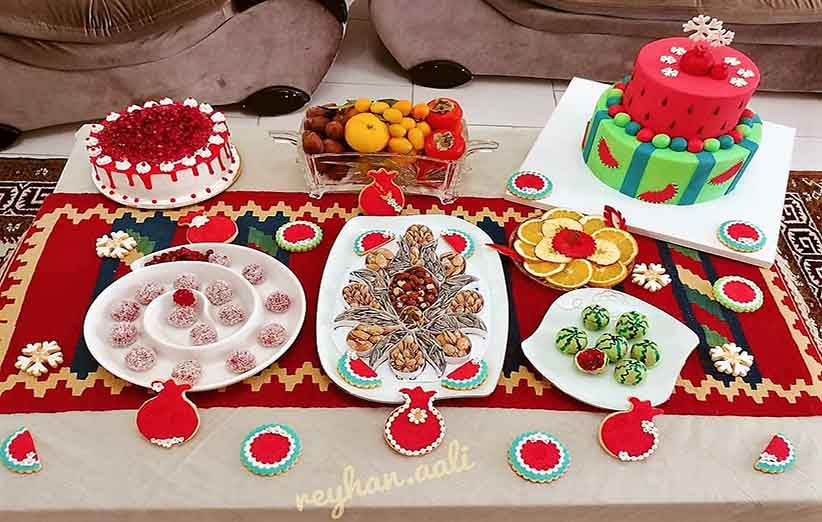

تنقلات و آجیل شب یلدا
در این شب مهمتر از شام، تنقلات و آجیل مخصوص شب یلدا ست. در گذشته که نگهداری طولانی مدت میوهها راحت نبود؛ خیلی از میوهها را برای نگهداری و مصرف در فصلهای دیگر، خشک میکردند.
آجیل شب یلدا
مغزهایی مثل پسته، گردو، بادام و فندق اجزای اصلی آجیل مخصوص شب یلدا هستند. در کنار اینها انجیر و توت خشک شده هم حاضر اند. از قدیم نخودچی و کشمش در بین آجیل شب یلدا وجود داشته. غیر از اینها گندم و نخود برشته، شاهدانه، تخمه هندوانه و کدو هم جز آجیلهای شب یلدا بوده.
به آجیل شب یلدا تنقلاتی هم اضافه شده. امروزه باسلق و پشمک هم از شیرینیهای این سفره هستند. درست است که آجیل بهعنوان سالمترین تنقلات شناخته میشوند؛ اما حواستان به کالری بالای آن و تنوع زیاد خوراکیها در سفره یلدا هم باشد.
برگه میوه
یکی از تنقلات محبوب شب یلدا میوههای خشک شده است. جایگزینی مناسب برای تنقلات ناسالم و حجم زیاد شیرینیهای صنعتی. علاوه بر امکان خرید از خشکبار و آجیل فروشیها، میتوانید برگه های خشک شده میوه را حتی در خانه تهیه کنید.